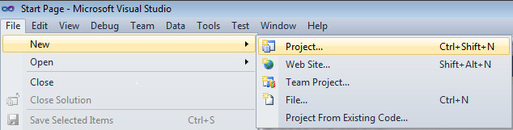
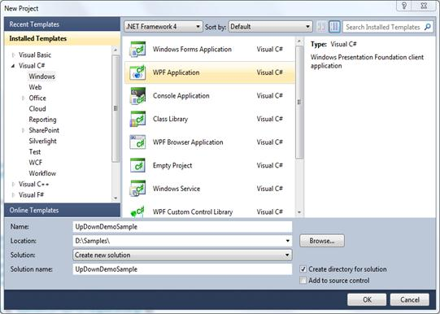
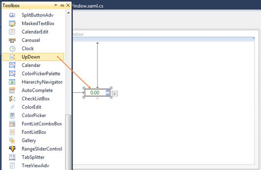

To create an UpDown instance in Visual Studio:
1. Open Visual Studio.
2. On the File menu, select New, and then select Project. The New Project dialog box opens.

Figure 1151:File Menu
3. In the New Project dialog box, select WPF Application, in the Name field, type the name of the project, and then click OK.

Figure 1152:New Project Dialog Box
4. Drag the UpDown control from the Toolbox window to Design View. An instance of the UpDown control is created in Design View.

Figure 1153: UpDown Control in Design View